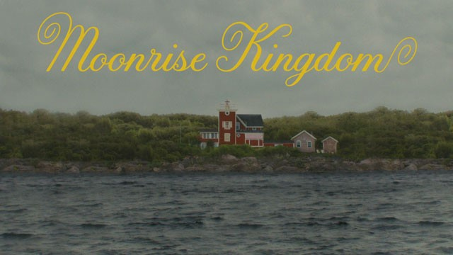

이름 : 웨스 앤더슨(Wes Anderson | Wesley Wales Anderson)
직업 : 영화 감독, 작가
출생 :1969년 5월 1일, 미국
신체 : 185cm
데뷔 : 1996년 영화 '바틀 로켓' 연출
전체 작품활동 : 영화 16건 / 도서 7건
| 년도 | 수상 |
|---|---|
| 2015 | 제67회 미국 작가 조합상 각본상 |
| 2015 | 제72회 골든글로브 시상식 뮤지컬코미디부문 작품상 |
| 2014 | 제64회 베를린국제영화제 은곰상 심사위원상 |
| 2010 | 제34회 안시 국제애니메이션 페스티벌 안시 크리스털상 |
| 2010 | 제34회 안시 국제애니메이션 페스티벌 장편부문 관객상 |
| 2009 | 제35회 LA 비평가 협회상 애니메이션상 |
| 2007 | 제18회 스톡홀름영화제 비전상 |
| 1998 | 제24회 LA 비평가 협회상 신인상 |
| 1996 | MTV영화제 신인 제작자상 |
웨스 앤더슨 감독의 생애
웨스 앤더슨은 1969년 휴스턴, 텍사스에서 태어났다. 아버지는 광고회사를 운영했고,
어머니는 고고학자 이다. 에릭과 멜이라는 두 형제가 있는데, 웨스 앤더슨이 8살 밖에 안되었을 때
부모가 이혼하였다. 이때의 충격이 깊게 남아서 감독 스스로도 "가장 잔인한 일"로 기억하고 있다고 한다.
그 때문인지 그의 영화, 특히 초기작에는 불완전한 가족에 관한 이야기가 반복적으로 등장한다.
아주 어릴 때 형제들과 함께 슈퍼 8mm필름 영화를 여러 차례 만들었다고 한다.
고등학교를 졸업하고 "University of Texas at Austin"에 입학하였고,
여기서 그의 영화감독사에 있어 영혼의 단짝인 오언 윌슨을 만났다.
1991년 철학으로 학사학위를 받았고, 1992년 드디어 흑백 단편 "바틀 로켓"을 만들었다.
이 영화가 영화제에게 나름의 호평을 받고 주목을 받으면서, 장편 영화 제작으로 이어졌고, 이후 그 만의 독특한 세계를 만들어 나갔다.
웨스 앤던슨 감독의 영화가 아름다운 이유
" Color "
앤더슨의 영화를 더욱 꿈처럼 보이게 하는 것은 바로 빈티지 파스텔 색조이다
감독은 이렇게 흐릿한 색조를 사용하여 과거의 향수를느끼게 한다.
컬러를 특정 지어 어떤 시대라고 말할 순 없지만, 영화에서 이러한
색감은 복고풍을 느끼게 한다. 사람들은 이러한 색감이 그의 영화적
세계관에 없어선 안될 요소라고 설명합니다. 환상저긴 색조와 공간의
연출로 관객이 영화 속에서 시대감각을 잃게 만든다.
" Centered "
그의 작품의 가장 대표적인 특징, 대부분이라 말해도 과언이 아닐 만큼
유명한 좌우대칭 '중앙' 구도의 촬영이다.
영화 속 정말 많은 장면이 자로 잰 듯 중앙에 배치되어 있다.
인물이 중앙에 서서 카메라를 바라보는 구도가 조금 부담스러울 수도
있지만, 산만한 관객의 시선을 집중시키는 효과가 있다.
웨스 앤더슨 감독은 자신이 노력하여 만들어진 세트를 강조하고 싶을 때
좌우 대칭의 평면적 화면 구성을 연출하는데, 평면 구성이 단조롭게
느껴질 수 있다는 단점을 색감과 중앙 구도로 극복해 나가는 것 같다.

" Typo - FUTURA "
꼼꼼한 그의 성격답게 그는 타이포그래피에도 매우 심혈을 기울인다.
영화에 알맞은 폰트를 사용하기도 하지만, 웨스 앤더슨은 대부분의
크레딧 영상이나 소품에 "FUTURA" 폰트를 사용한다.
푸투라는 기본적인 글꼴이 주는 기하학적 아름다움을 전달하는 폰트인데
고적적인 서체를 바탕으로 다양한 글자의 폭이 흥미로운 리듬감을 준다.
